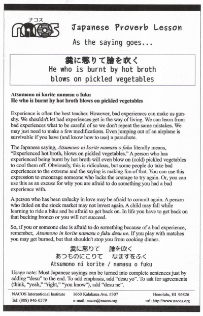

Atsumono ni korite namasu o fuku
He who is burnt by hot broth blows on pickled vegetables
Experience is often the best teacher. However, bad experiences can make us gun-shy. We shouldn't let bad experiences get in the way of living. We can learn from bad experiences what to be careful of so we don't repeat the same mistakes. We may just need to make a few modifications. Even jumping out of an airplane is survivable if you have (and know how to use) a parachute.
The Japanese saying, Atsumono ni korite namasu o fuku literally means, “Experienced hot broth, blows on pickled vegetables.” A person who has experienced being burnt by hot broth will even blow on (cold) pickled vegetables to cool them off. Obviously, this is ridiculous, but some people do take bad experiences to the extreme and the saying is making fun of that. You can use this expression to encourage someone who lacks the courage to try again. Or, you can use this as an excuse for why you are afraid to do something you had a bad experience with.
A person who has been unlucky in love may be afraid to commit again. A person who failed on the stock market may not invest again. A child may fall while learning to ride a bike and be afraid to get back on. In life you have to get back on that bucking bronco or you will not succeed.
So, if you or someone else is afraid to do something because of a bad experience, remember, Atsumono in korite namasu o fuku desu ne. If you play with matches you may get burned, but that shouldn't stop you from cooking dinner.
Usage note: Most Japanese sayings can be turned into complete sentences just by adding “desu” to the end. To add emphasis, add “desu yo”. To ask for agreements (think, “yeah,” “right,” “you know”), add “desu ne”.

| © 1995-2013 NACOS International Institute. All Rights Reserved. |